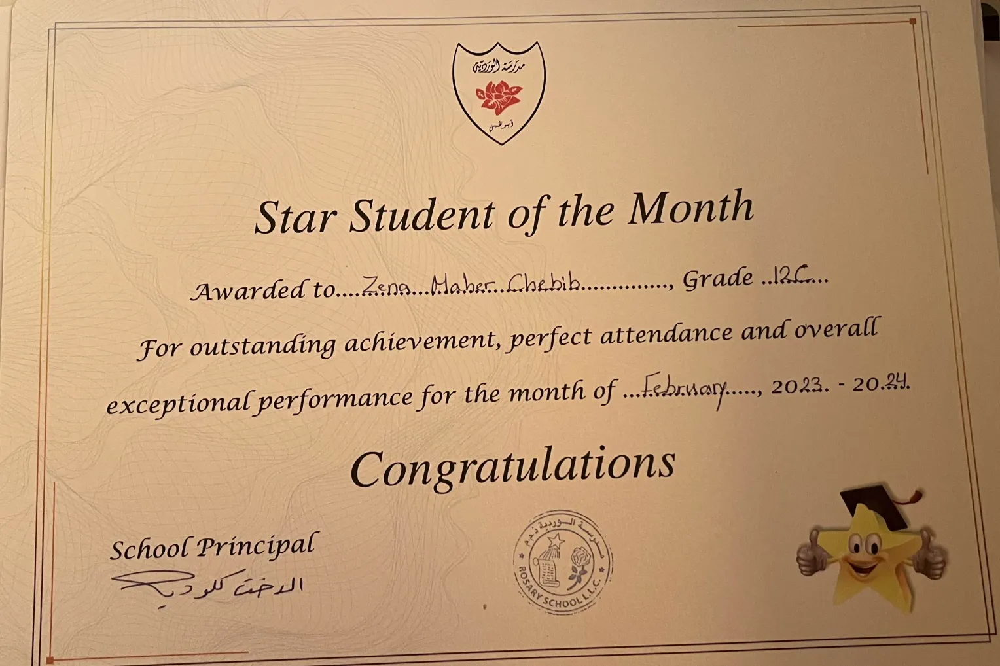

About Me
My name is Zena and I come from a city in Syria called Homs. I'm a year early into Rosary Private School with lots of passion for my major, Computer Science. As I was writing my first line of code, wondering about what is ahead for me in the future, I discovered an affinity for Computer Science. I like to promote enthusiasm and encouragement for topics related to my interests, which makes me enjoy linking any work to my personal preferences and delights. I selected a certain color palette for this website, which speaks a lot about me. Light pink signifies my personality and my willingness to contribute to the college with my talents and expertise. Blush pink represents my excitement about starting college and how much I can accomplish with your assistance. Brown indicates my dedication to Computer Science and how most of my accomplishments are linked to it. Beige signifies my perfectionism and how I prefer to spend every second of the day doing something helpful and invigorating. The dark grey shade surrounding each border represents how I learn from my mistakes, which help me grow as a person and build my character. The white color around each title is your true feelings about me as an outsider's view, which you can share with me later.
---------------------------------------------------------------------------------------------------------------------------
My Hobbies
♡. In my spare time, I enjoy sketching various characters with different styles and backgrounds. I cherish connecting my current sentiments and emotions to my artwork due to how it helps me understand myself better. Making art that resembles my flaws helps me feel more at ease and accepting of myself.
♡. Another hobby of mine is coding, which helped me develop this website. My personality comprises of various traits, mostly patience, which is essential for coding. Coding necessitates not only creativity but also problem-solving abilities, which I believe I possess. Earlier projects like this website helped me build up my experience with coding.
♡. Loom knitting has always been my go-to activity when I need to unwind. It helps me relax and also allows me to make miniature carpets as decorations.
♡. Playing badminton boosts both my concentration and physical abilities. It also helps me with releasing tension and remaining energised throughout the day, which is why I tend to have it as a regular hobby.
 ♡. When I have the chance, I enjoy designing and decorating houses and cafes in an online video game, creating cozy spaces with unique layouts.
♡. When I have the chance, I enjoy designing and decorating houses and cafes in an online video game, creating cozy spaces with unique layouts.
---------------------------------------------------------------------------------------------------------------------------
My Achievements
♡. I managed to obtain many Coursera certificates as a result of my perseverance in completing courses including machine learning and Python. These courses have helped equip me with the knowledge that I now have about various topics consisting my major.
♡. I've always intended to study a third language alongside Arabic and English, so I began learning Italian day by day due to my fascination in its culture and places. So far, I've relied on Busuu to study Italian up to A2 level.
♡. My experience with Arduino gave me an insight of a new coding language (C++) along with electrical engineering concepts and ideas that can be quite beneficial. I've carried out 15 small arduino projects but I'll include 2 of my favorites (1 digit 7 segments display - heart shaped display experiment), feel free to email me if you'd like to see more.
♡. I participated twice in a programming competition at Abu Dhabi University that provided me with the best programming experience considering that I got to know many people there and their programming talents, which inspired me to enhance my own.
♡. I had the opportunity to attend an American University of Sharjah spring camp that taught me everything I now know about Computer Engineering and many other topics.
 ♡. During 11th grade, I had a health science assignment that required me and my classmates to advocate for cancer types and highlight the hazards of things that might lead to one of the many types of cancer. With the assistance of my school and teacher, I was able to share health knowledge and raise awareness in my community.
♡. During 11th grade, I had a health science assignment that required me and my classmates to advocate for cancer types and highlight the hazards of things that might lead to one of the many types of cancer. With the assistance of my school and teacher, I was able to share health knowledge and raise awareness in my community.

♡. I got the chance to win a student of the month certificate during 12th grade, which most of my teachers felt that I ought to receive.
 ♡. As an awareness project, my two classmates and I decided to arrange an event where we could educate other students within our school about skin conditions such as eczema. With this effort, numerous students came around our booth and wrote tips for eczema sufferers. Furthermore, many students with eczema felt heard as a result of our project.
♡. As an awareness project, my two classmates and I decided to arrange an event where we could educate other students within our school about skin conditions such as eczema. With this effort, numerous students came around our booth and wrote tips for eczema sufferers. Furthermore, many students with eczema felt heard as a result of our project.